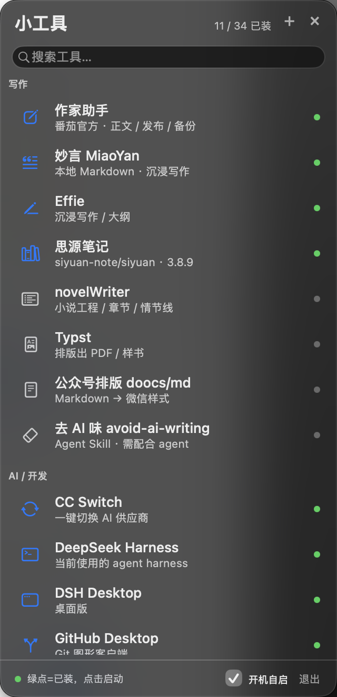

把写作、AI、系统小工具收进一个悬浮侧边栏。
没装的工具，点一下由本地 agent 搜索 GitHub → 下载 → 自检 → 安装。
未公证（ad-hoc 签名）：首次打开请右键 →「打开」，或执行 xattr -dr com.apple.quarantine。

查最新 GitHub Release、选 macOS 包、SHA-256 / 签名 / Gatekeeper 自检，不弹浏览器。
内置 26 个工具，分组 + 模糊搜索；绿点=已装，点一下启动。
↑↓ 选择、⏎ 打开/安装、⌘F 搜索、⌥⌘T 全局呼出。
一键装齐、导出配置换机、自定义分类与排序。
收起成可拖动小球；静默开机只留菜单栏图标。
Sparkle appcast + 原生兜底；更新/卸载都在右键里。
brew tap lovers0/tool-sidebar && brew install --cask tool-sidebar
没有 Homebrew：从 Releases 下载 ToolSidebar.zip，解压拖进 /Applications。
没有账号、没有遥测。只访问 GitHub API 获取 Release 信息；在线翻译默认关闭，开启时才发送要翻译的文本。